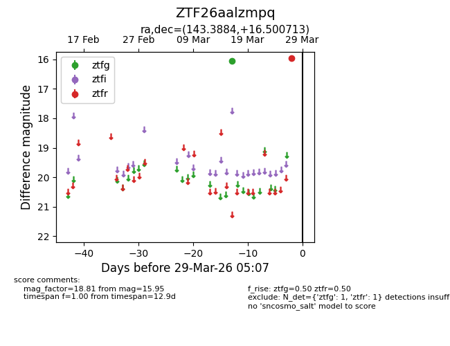
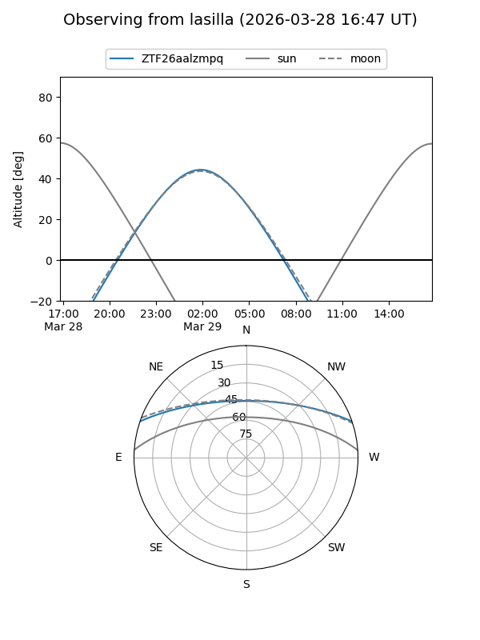
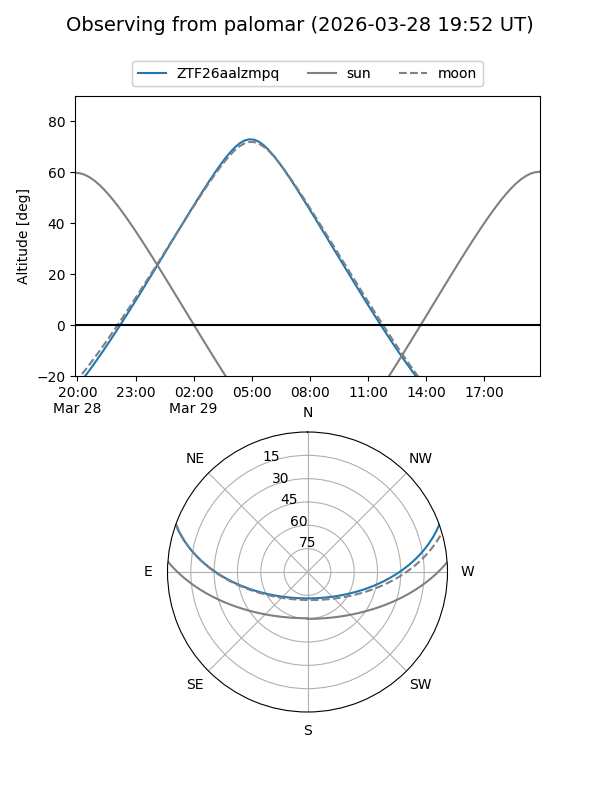

ZTF26aalzmpq
Target ZTF26aalzmpq at 2026-03-29 05:10
Aliases and brokers:
FINK: link
Lasair: link
ALeRCE: link
alt names
ZTF26aalzmpq (ztf,fink_ztf)
Coordinates:
equatorial (ra, dec) = 143.3884,+16.50071
equatorial (HMS+DMS) = 09:33:33.23,+16:30:02.57
galactic (l, b) = (215.3935,+43.15989)
Flags:
Photometry:
last ztfg=16.04, ztfr=15.95
1 ztfg, 1 ztfr detections
Lightcurve

Visibility


Additional plots